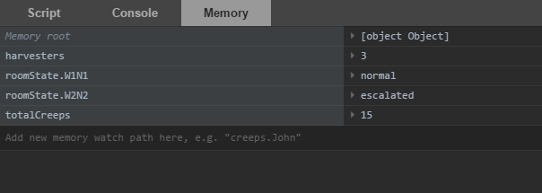

Javascript 源生的 console.log() 。
for(var i in Game.creeps) {
console.log(Game.creeps[i]);
}对于所以的动作指令，若被执行了，则返回值为 OK，如果无法被执行，则会返回相应的错误代码 ERR_* 。
var result = creep.attack(target);
if(result != OK) {
console.log(creep + ' failed to attack the target ' + target +
' with the code: ' + result);
}注意，一个看似合理的指令并不一定能被执行。（比如， creep 遇见了未被其代码声明的障碍）
玩家可用并行世界副本公共测试领域来测试其代码。
在浏览器端调试
当用浏览器玩此游戏时，所有控制台输出都会被转发到浏览器控制台。在 Simulation 模式下，玩家的代码由浏览器，所以玩家得以扩展，查看和遍历对象及其属性等。
在 Chrome 浏览器里，您可以使用 debugger Javascript 关键词来暂停执行并进行调试:
var result = creep.attack(target);
if(result != OK) {
debugger;
}监测 Memory
如果玩家想实时观察变量，可选择把它们写入 Memory 并将其加入监测器面板。监测器面板每 tick 会自动更新。
